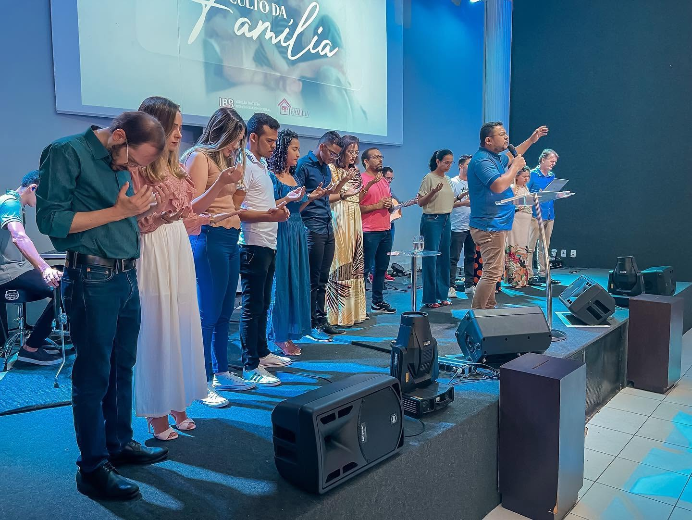
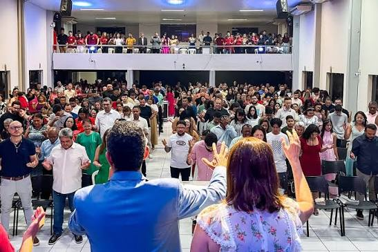
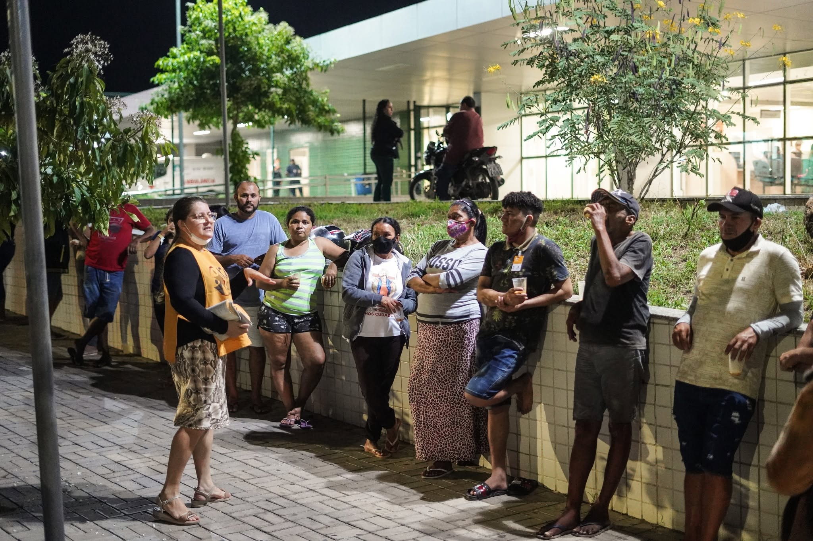
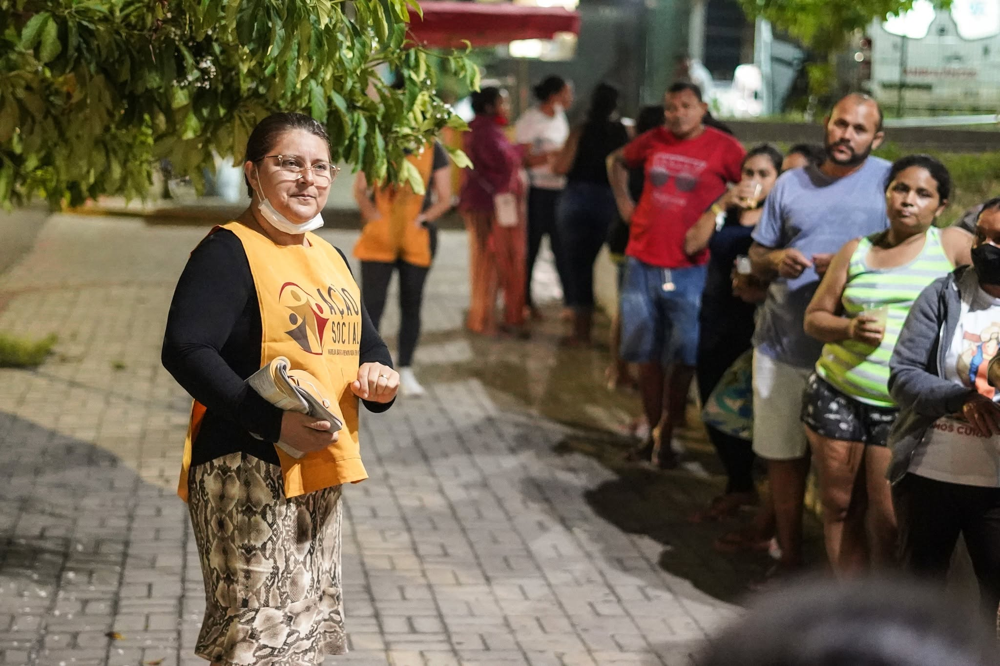
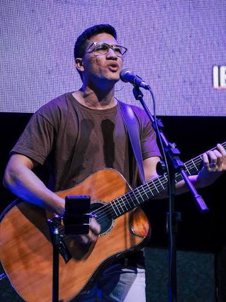
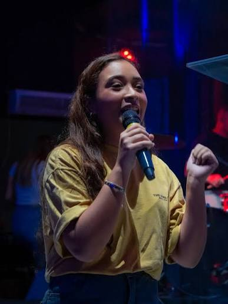
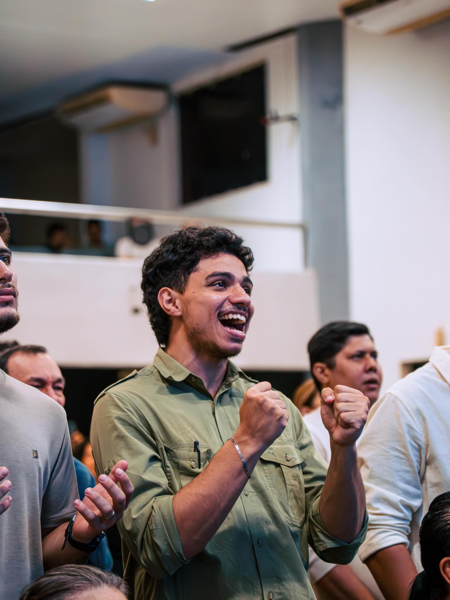
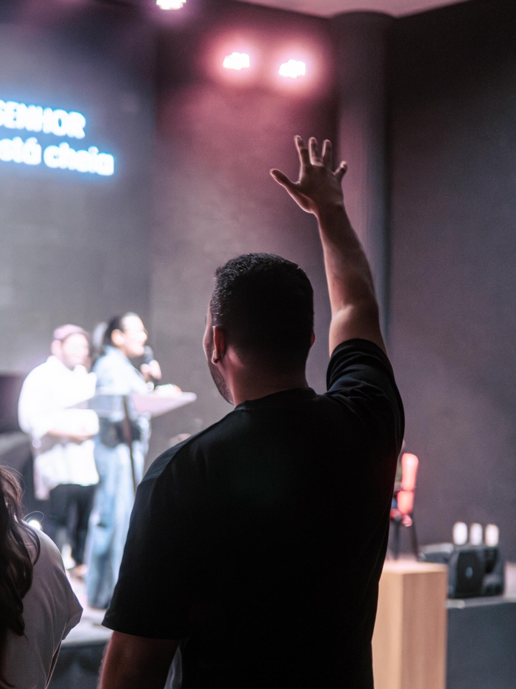
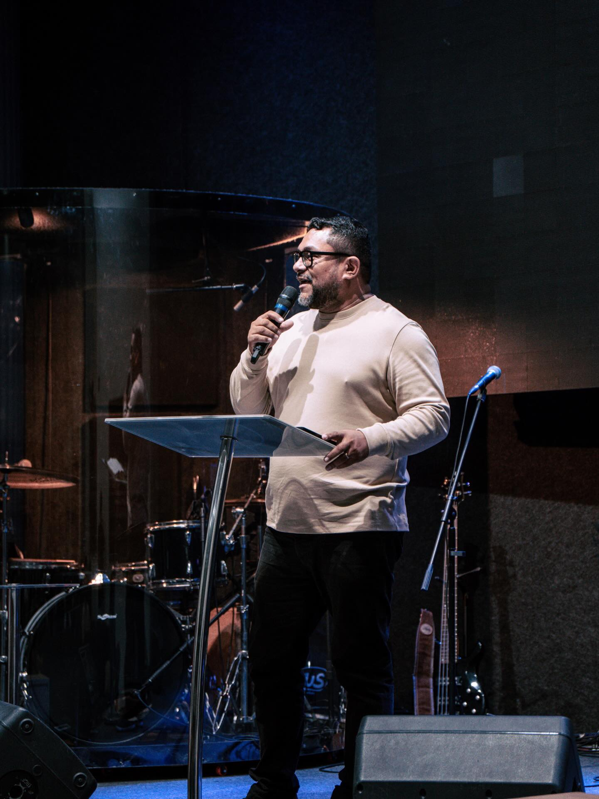

Ação Social
Apoio e assistência a famílias e pessoas em situação de necessidade.
Igreja Batista Renovada em Sobral — reuniões presenciais e online, de braços abertos para você.
Horários dos cultos Como chegarExistimos para glorificar a Deus, acolher pessoas e transformar vidas através do Evangelho de Jesus Cristo. Somos uma família que ama, serve e caminha junto, fazendo discípulos em Sobral e além.


“Ir até os confins da terra levando a esperança de Cristo — começando por Sobral.”
Acreditamos que cada membro é um missionário. Apoiamos, enviamos e oramos por quem leva o Evangelho para perto e para longe.
Servir ao próximo é a nossa forma prática de mostrar o amor de Cristo à nossa cidade.
Apoio e assistência a famílias e pessoas em situação de necessidade.
Pessoas que dedicam seu tempo para abençoar a comunidade.
Levando esperança, cuidado e a palavra de Deus às ruas e lares.


Fortalecendo lares com princípios bíblicos.
Ensinando as crianças no caminho do Senhor.
Adolescentes marcados pelo poder de Deus!
Uma geração unida pela Presença de Deus!
Servindo com excelência em tudo o que a igreja realiza.
Homens crescendo em fé, caráter e propósito.
Mulheres na forja de Deus, unidas em oração e comunhão.
Ministério de louvor que conduz a igreja à presença de Deus.
Acolhimento e direcionamento de novos membros e visitantes.
Presencial e online. Escolha o melhor dia e venha adorar conosco.
Culto de doutrina
Culto de oração
Culto de Louvor e Adoração
Culto de Louvor e Adoração




